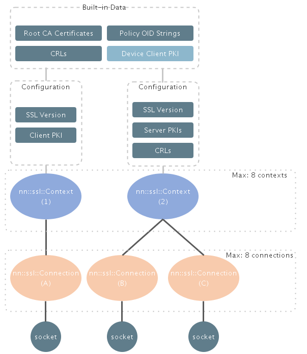

SSL ライブラリは、TCP/IP 接続上の SSL/TLS 接続を使用してデータを読み書きすることでサーバと安全に通信するためのクラスとインターフェースを提供します。クラスの表記方法には、主に以下の 2 つがあります。
SSL 接続を確立するには、まず nn::ssl::Context オブジェクトを作成する必要があります。nn::ssl::Connection オブジェクトを作成する前に nn::ssl::Context オブジェクトを構成しておく必要があります。
nn::ssl::Context オブジェクトを作成すると、nn::ssl::Connection を作成できるようになります。nn::ssl::Context オブジェクトがない状態で nn::ssl::Connection オブジェクトを作成することはできません。nn::ssl::Connection の Create() メソッドに nn::ssl::Context オブジェクトへのポインタを渡す必要があるからです。
nn::ssl::Context および nn::ssl::Connection オブジェクトの「作成」と「インスタンス化」には違いがあります。ここでいう「作成」とは、nn::ssl::Context オブジェクトまたは nn::ssl::Connection オブジェクトの Create() メソッドを呼び出すことを意味します。したがって、nn::ssl::Context オブジェクトがなくても nn::ssl::Connection オブジェクトはインスタンス化できます。
以下の図は、SSL ライブラリのクラスとエンティティの階層を示しています。以下の nn::ssl::Context および nn::ssl::Connection の説明と併せてこの図を参照してください。

図 1SSL ライブラリのオブジェクト階層
このクラスは、SSL のコンテキストを表します。 このコンテキストを使用して、その下で SSL 接続を確立するときに使用する構成パラメータを保持します。 例えば、nn::ssl::Connection による SSL 接続を確立する際に使用する SSL プロトコルのバージョンは SSL コンテキストでの構成で決まります。
SSL 通信で使用する各種の証明書、キー、および CRL も、このクラスで管理します。 SSL ライブラリでは、ピア証明書を検証するために、信頼できる認証局が発行した任意の数の証明書をインポートできます。また、証明書をまったくインポートしないことも可能です。 サーバでクライアント証明書を検証する場合は、クライアント証明書とその秘密鍵をインポートすることもできます。
すべての nn::ssl::Context オブジェクトで暗黙的に使用される組み込みデータ（ルート CA 証明書など）も用意されています。したがって、この組み込みデータに用意されているルート CA 証明書はユーザ側でインポートする必要はありません。
組み込みエンティティの詳細については以下のページを参照してください。
証明書とキーの扱いについて詳しく理解するには以下のページを参照してください。
詳細については、API リファレンスで nn::ssl::Context の説明を参照してください。
これは、SSL の接続を表しています。 クラスの 1 つのインスタンスで、TCP/IP ソケットを使用した SSL 接続を 1 つ管理します。 それぞれの接続が特定の nn::ssl::Context オブジェクトに関連付けられ、 SSL 接続の構成に必要な構成パラメータがそのオブジェクトから取得されます。
データを読み書きするための I/O 操作と SSL ハンドシェイクは、このクラスのメソッドで提供されます。 このメソッドでは、nn::ssl::Connection::SetIoMode() で構成できるブロック型 API と非ブロック型 API の両方をサポートしています。
SSL ライブラリは SSL/TLS プロトコルを扱いますが、ソケットの作成や TCP/IP 接続の確立には関与しません。SSL ライブラリを使用する場合は、SSL ハンドシェイクを実行する前に、ソケットライブラリを使用して TCP ソケットを作成し、そのソケット上で接続を確立する必要があります。
TCP 接続を確立した後は、SSL ライブラリにソケットディスクリプタを渡す必要があります。SSL ハンドシェイクが成功すると SSL ライブラリで SSL ハンドシェイクが実行され、渡したソケット上で暗号化データが転送されます。
なお、SSL ライブラリにソケットを正常に渡すと、そのソケットに対してはどのようなソケット操作も実行できなくなります。以降のすべての操作は、SSL ライブラリに用意されているインターフェースを使用して実行する必要があります。
該当のソケットが使用されなくなると（SSL 接続が閉じた場合など）、そのソケットは SSL ライブラリによって自動的に閉じます。また、nn::ssl::Connection::Destroy を実行して SSL 接続を破棄するとき、該当のソケットが閉じていない場合にもソケットが自動的に閉じます。このように、SSL ライブラリにソケットを渡した後は、ソケットを閉じる操作などのあらゆるソケット操作を呼び出し元で扱う必要がなくなります。
上記の操作順序を簡単にまとめると以下のようになります。
SSL ハンドシェイクは、nn::ssl::Connection::Handshake() を呼び出した後でのみ実行されます。SSL ライブラリでは、nn::ssl::Connection オブジェクトに関連付けられた nn::ssl::Context オブジェクトで管理されている CA 証明書に基づき、SSL ハンドシェイクの際にサーバを検証します。nn::ssl::Context オブジェクトに何もインポートしていない場合、サーバの検証は組み込みのルート CA 証明書のみを使用して実行されます。
SSL ライブラリではセッションの再開がサポートされています。デフォルトでは、セッション ID を指定した SSL ハンドシェイクが成功すると、そのセッションのキャッシュデータが作成されます。新たな SSL ハンドシェイクの実行で使用できるセッションキャッシュデータがある場合、SSL ライブラリでは自動的にそのデータが使用されます。
詳細については、API リファレンスで nn::ssl::Connection の説明を参照してください。